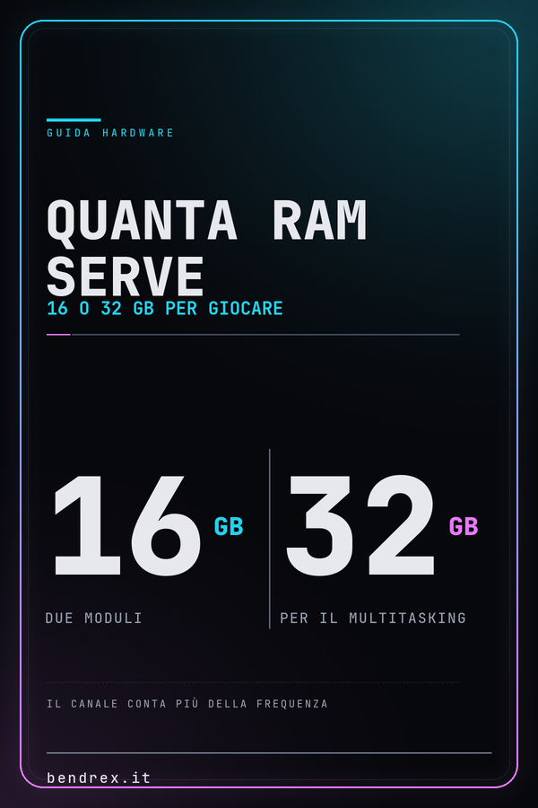

RAM per giocare: quanta ne serve, e quando 16 GB non bastano

· Redazione BENDREX
In breve
- 16 GB bastano a 1080p e 1440p nella maggior parte dei giochi del 2026, purché siano due moduli: 1×16 GB perde l'11% di fps medi (ComputerBase, 2 febbraio 2026).
- 32 GB non danno frame in più: +1,0% di media nel test 2021, nessun guadagno con il solo gioco nel test XDA 2026. Danno margine quando il PC fa altro.
- Il salto costa 164,88 € in più a parità di kit (Amazon.it, 24 novembre 2026), su prezzi già saliti del 283% rispetto a settembre 2025.
Quanta RAM serve per giocare? Nel 2026 la risposta corta è 16 GB, ma con una condizione: devono essere due moduli da 8 GB, non uno da 16. Il formato conta più della quantità, e questa è la parte che si sbaglia più spesso. La seconda risposta corta è che 32 GB non aggiungono frame: aggiungono margine. La Steam Hardware Survey di ottobre 2026 dice che il 41,42% dei PC ha 16 GB e il 37,06% ne ha 32, quindi la domanda riguarda quasi tutti. Qui sotto ci sono le misure, con fonte e data, e i casi in cui il margine vale la spesa.
16 GB bastano? Dipende da cosa gira insieme al gioco
Il caso in cui la differenza si vede non è il gioco da solo, ma il gioco con altro aperto. Nel test XDA del 21 novembre 2026 (Ryzen 7 9800X3D, RTX 5070, stesso kit DDR5-6000, quattro giochi a 1080p) con 16 GB l'uso di RAM arriva al 90% nei momenti concitati. Aggiungendo Chrome con sei schede, Discord e Spotify, con 16 GB «frames would dip… sometimes the game would momentarily stutter when entering new areas», mentre con 32 GB restavano almeno 10 GB liberi. Con 64 GB non c'era alcun guadagno in gioco. È un test su un PC, senza fps pubblicati: vale come evidenza direzionale, non come benchmark.
Quando la RAM finisce, Windows sposta su disco le pagine meno usate. Il gioco non si chiude: compaiono stutter, pop-in delle texture e attese all'ingresso di nuove aree. Quanto si sente dipende dalla velocità del disco, e l'autore del test XDA lo nota come sua impressione, non come misura. Il file di paging gestito dal sistema cresce fino a 3× la RAM o 4 GB, il maggiore, quando il commit arriva al 90% del limite (Microsoft Learn, Introduction to the page file, consultato il 24 novembre 2026). Disattivarlo non velocizza niente.
DirectStorage non è la soluzione alla poca RAM: sposta la decompressione su hardware dedicato e riduce i buffer di staging, ma non il fabbisogno di memoria del gioco (Microsoft GDK, consultato il 24 novembre 2026). Rende l'overflow meno doloroso su un NVMe veloce, non lo elimina. Su questo conta anche il disco: l'articolo sul Kingston NV3 spiega la parte di lettura.
I canali contano più della frequenza
Due moduli occupano due canali da 64 bit e lavorano in parallelo: è il dual channel. Un modulo solo ne usa uno, e la banda disponibile si dimezza. ComputerBase lo ha misurato il 2 febbraio 2026 su un Ryzen 5 9600X: con un solo modulo la banda scende da 64 a 43 GB/s, gli fps medi perdono l'11% e il frametime il 12%, con punte del 24% nei casi peggiori.
Sui processori con cache 3D la perdita si attenua: sul Ryzen 7 9850X3D (28 gennaio 2026) il caso peggiore arriva a −20%, ma la media è piccola, perché la cache compensa parte degli accessi in memoria. Resta il fatto che 2×8 GB sono meglio di 1×16 GB, a parità di capacità e di spesa.
La frequenza è una leva più debole. Nello stesso test del 28 gennaio 2026, passare da DDR5-4800 a DDR5-6000 su 9850X3D dà una differenza inferiore a quella fra single e dual channel. I timing stretti aiutano, ma non restituiscono un canale mancante.
Due parole su EXPO e XMP: sono profili di overclock validati dai produttori, non specifiche. AMD scrive che un overclock fuori specifica di CPU e memoria «will void any applicable AMD product warranty» (nota GD-106, pagina EXPO, consultata il 24 novembre 2026). Attivarli è normale e previsto, ma conviene sapere cosa si sta facendo.
Infine, due moduli o quattro? A parità di capacità non cambia nulla di misurabile: nel test ComputerBase del 27 gennaio 2021, 32 GB in 4×8 GB fanno 132,3 fps e 32 GB in 2×16 GB 131,8 fps a 1080p, media su otto giochi. Meglio due moduli per un motivo pratico: restano due slot liberi per raddoppiare senza buttare il kit. Il calo di frequenza con quattro moduli non l'ho trovato misurato: non verificato.
Quando conviene passare a 32 GB
Raddoppiare la RAM non alza gli fps. Il confronto ComputerBase del 27 gennaio 2021, a parità di tutto il resto, dà +1,0% di media passando da 16 a 32 GB (130,4 → 131,8 fps) e +2,4% sul 99,8° percentile (88,6 → 90,7). Sono dentro il rumore. Quel test è su DDR4 e ha cinque anni: vale per il metodo, non per i giochi di oggi. Il test XDA del 21 novembre 2026, su un PC DDR5, non trova differenze di fps con il solo gioco aperto.
I requisiti raccomandati dichiarati su Steam, letti il 24 novembre 2026, sono ancora 16 GB per Cyberpunk 2077, Starfield, Baldur's Gate 3, Monster Hunter Wilds, Battlefield 6, Crimson Desert e Resident Evil Requiem. Le eccezioni esistono: Kingdom Come: Deliverance II e DOOM: The Dark Ages mettono 32 GB fra i raccomandati. Halo: Campaign Evolved chiede 16 GB nei profili 1080p/30 e 1440p/60 e 32 GB nei profili 4K/60 e Ultra (ComputerBase, 25 giugno 2026).
A 1440p la quantità di RAM di sistema non cambia in modo significativo: la risoluzione consuma VRAM, cioè i buffer e le texture sulla scheda video. Per quel lato c'è l'articolo sulla VRAM da 8 GB. A 4K il collo di bottiglia è la GPU, e non ho trovato una misura in cui 32 GB diano più fps a 4K: non verificato.
Un'avvertenza sui requisiti: sono dichiarazioni, non misure. Cinder City ha pubblicato 32 GB minimi e 64 raccomandati, poi lo studio ha parlato di errore e ha corretto a 32 GB raccomandati (ComputerBase, 1 luglio 2026). Vale anche per i titoli in arrivo: sulle pagine di GTA 6 e del precaricamento di GTA 6 i numeri vanno letti come annunciati, non come testati.
Il prezzo del salto, come istantanea: rilevazione Amazon.it del 24 novembre 2026, IVA inclusa, kit DDR5-6000. I 2×8 GB stanno fra 319,25 € e 365,19 €, i 2×16 GB fra 509,99 € e 530,07 €. A parità di modello e CL30 raddoppiare la capacità costa 164,88 € in più, il 45%, non il doppio. È un solo negozio controllato e una settimana di Black Friday, non un listino. Il contesto è una crisi: i kit sono arrivati a +283% rispetto a settembre 2025 (ComputerBase, aggiornato al 17 luglio 2026). Che il calo del 32 GB nella survey dipenda dai prezzi è plausibile, ma la causa non è dimostrata.
E «sufficiente tra due anni»? Non esiste una misura, e chi la dà sta stimando. L'unica cosa sostenibile è questa: nel 2026 i tripla A più pesanti mettono 32 GB fra i raccomandati, quindi 16 GB resta sufficiente a 1080p e 1440p con qualche compromesso e senza multitasking. È un'inferenza dai requisiti, non un dato. Se state montando il PC, la scelta del kit va insieme a quella della scheda madre: la guida su come scegliere la scheda madre copre slot e configurazioni DIMM, mentre in build-pc ci sono le configurazioni che usiamo.
Dati rilevati il 24 novembre 2026. Prezzi: rilevazione Amazon.it del 24 novembre 2026, IVA inclusa, disponibilità variabile; è un'istantanea della settimana Black Friday, non un listino.
Domande frequenti
- 16 GB bastano per giocare nel 2026?
Sì, a 1080p e 1440p, nella maggior parte dei titoli. I requisiti raccomandati su Steam sono ancora 16 GB per Cyberpunk 2077, Starfield, Baldur's Gate 3 e altri. Diventano stretti se tenete aperto il browser o registrate, e alcuni giochi chiedono già 32 GB.
- Meglio 1×16 GB o 2×8 GB?
2×8 GB, senza dubbio. Due moduli lavorano in dual channel e sfruttano due canali da 64 bit; un modulo solo ne usa uno. Su Ryzen 5 9600X la differenza misurata è dell'11% sugli fps medi e del 12% sul frametime (ComputerBase, 2 febbraio 2026).
- 32 GB danno più fps?
No. Il confronto a parità di tutto dà +1,0% di media e +2,4% sul 99,8° percentile (ComputerBase, 27 gennaio 2021), valori dentro il rumore. Il vantaggio è di spazio: con browser, Discord e Spotify aperti, 16 GB arrivano al 90% di uso e compaiono stutter.
- Quanto costa passare da 16 a 32 GB?
A parità di modello e CL30, 164,88 € in più, il 45% (Amazon.it, 24 novembre 2026, IVA inclusa). I 2×16 GB stanno fra 509,99 € e 530,07 €, i 2×8 GB fra 319,25 € e 365,19 €. È un'istantanea di un solo negozio in settimana Black Friday.
Fonti
| Fonte | Cosa fornisce | Data |
|---|---|---|
| store.steampowered.com/hwsurvey | RAM installata: 16 GB 41,42%, 32 GB 37,06%, 8 GB 7,52% | ottobre 2026, letta 24/11/2026 |
| Steam API appdetails (Cyberpunk 2077, Starfield, BG3, KCD2, MH Wilds, BF6, Crimson Desert, RE Requiem, DOOM TDA) | requisiti RAM minimi e raccomandati | consultati 24/11/2026 |
| computerbase.de — 8 vs. 16 vs. 32 GB RAM | +1,0% media, +2,4% 1% low; 4×8 e 2×16 equivalenti | 27/01/2021 |
| computerbase.de — RAM ist zu teuer? Ein Modul … Ryzen 9000X3D | single vs dual su 9850X3D, max −20%; 4800 vs 6000 | 28/01/2026 |
| computerbase.de — … Ryzen 9000X | 9600X: 43 vs 64 GB/s, −11% fps, −12% frametime, −24% worst | 02/02/2026 |
| computerbase.de — Cinder City | 32/64 GB poi corretti a 32 GB raccomandati | 01/07/2026 |
| computerbase.de — Halo: Campaign Evolved | 16 GB nei profili bassi, 32 GB nei profili alti | 25/06/2026 |
| computerbase.de — HDD, SSD und RAM teurer | RAM +283% rispetto al periodo pre-crisi | aggiornato 17/07/2026 |
| xda-developers.com — I tested 16GB, 32GB, and 64GB… | 9800X3D + RTX 5070, gioco da solo e con programmi in background | 21/11/2026 |
| learn.microsoft.com — Introduction to the page file | commit limit, crescita del page file fino a 3× RAM o 4 GB | consultato 24/11/2026 |
| learn.microsoft.com — Microsoft GDK, DirectStorage overview | decompressione hardware, buffer di staging | consultato 24/11/2026 |
| amd.com — pagina EXPO, nota GD-106 | EXPO è overclock, effetto sulla garanzia | consultata 24/11/2026 |
| amazon.it | prezzi kit 2×8 GB e 2×16 GB DDR5-6000 | 24/11/2026 |